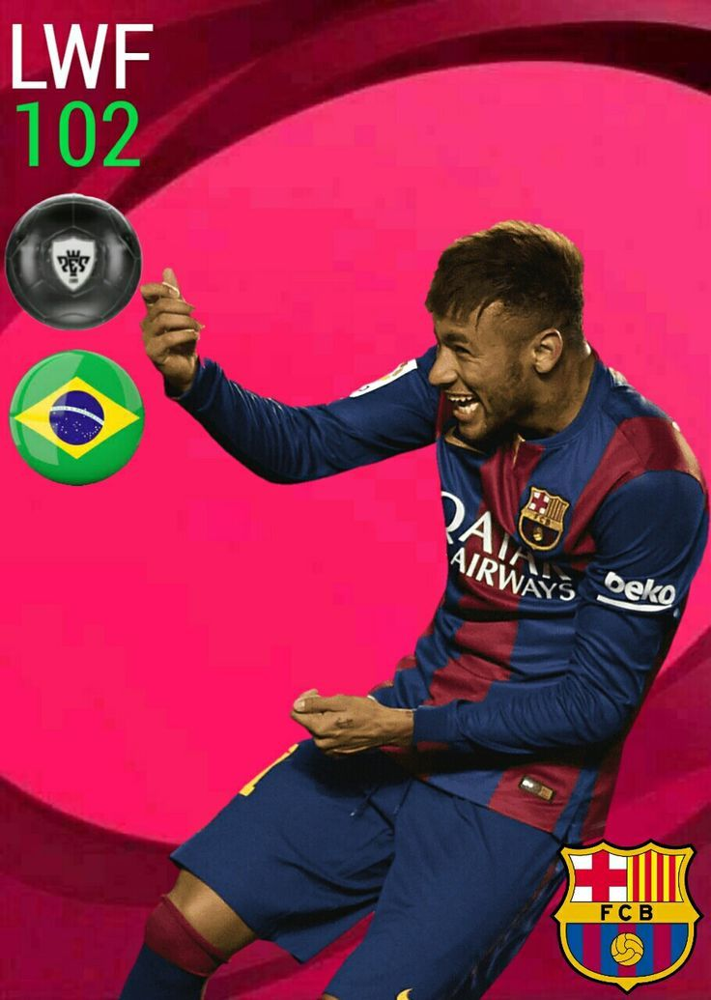
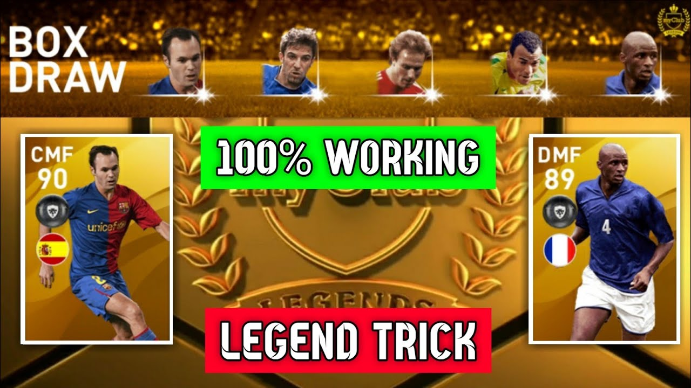

efootball
efootball rewards iconic boxdraw and gp legend boxdraw

Neymar da Silva Santos Júnior (born 5 February 1992), known as Neymar, is a Brazilian professional footballer who plays as a forward for Ligue 1 club Paris Saint-Germain and the Brazil national team. He is considered a versatile player, being able to play as either a central striker, second striker, winger or occasionally as an attacking midfielder.[7] A prolific goalscorer and renowned playmaker, he is regarded as one of the best players in the world.[8] Neymar has scored at least 100 goals for three different clubs, making him one of three players to achieve this.[9]
iconic

Andrés Iniesta Luján (Spanish pronunciation: [anˈdɾes iˈnjesta luˈxan]; born 11 May 1984) is a Spanish professional footballer who plays as a midfielder and is the captain of J1 League club Vissel Kobe. Considered one of the greatest midfielders of all time,[3][4][5] Iniesta has spent most of his career at Barcelona, where he served as the captain for three seasons.
Iniesta came through La Masia, the Barcelona youth academy, after an early migration from his birthplace, and impressed from an early age. He made his first-team debut aged 18 in 2002. He began playing regularly during the 2004–05 season and remained in the team until 2018. Iniesta was an integral part of the Barcelona sides that won two historic trebles in 2009 and 2015, and his 35 trophies, which includes nine La Ligas and four UEFA Champions League titles, make him the most decorated Spanish footballer of all time.[6] After 22 years at Barcelona, Iniesta signed for Japanese club Vissel Kobe in 2018.
Iniesta played for Spain at the Under-16, Under-19 and Under-21 levels before making his international debut in 2006. He helped Spain win UEFA Euro 2008, playing every game and being selected in the Team of the Tournament. Iniesta was also a key member of the victorious Spanish team at the 2010 FIFA World Cup; he scored the winning goal in the final against the Netherlands, for which he was named the Man of the Match, and was selected to the tournament's All-Star Team. At UEFA Euro 2012, Iniesta led Spain to their second consecutive continental crown, again being chosen as the Man of the Match of the final against Italy, and was named the Player of the Tournament.
Iniesta has been named in the FIFA FIFPro World XI nine times and was chosen in the UEFA Team of the Year on six occasions. He was named in the All-time UEFA Euro XI. He won the UEFA Best Player in Europe Award in 2012 and was named the IFFHS World's Best Playmaker in 2012 and 2013. Iniesta was runner-up to Lionel Messi for the 2010 FIFA Ballon d'Or and achieved third place in 2012.
Patrick Vieira (born 23 June 1976) is a French professional football manager and former player who is the manager of Premier League club Crystal Palace. He is widely considered as one of the greatest midfielders of his generation. Vieira began his career at Cannes in 1994, where several standout performances in his debut season garnered him a move to Serie A club Milan a year later, though he had limited first-team playing time. In 1996, he relocated to England, where he was able to join his fellow countryman Arsène Wenger at Arsenal for a fee of £3.5 million.
During his nine-year stint in the Premier League, Vieira established himself as a dominating box-to-box midfielder, noted for his aggressive and highly competitive style of play, an attitude that also helped him excel as captain of the club from 2002 until his departure in 2005. He was named in the Premier League PFA Team of the Year for six consecutive years from 1999 to 2004. He helped Arsenal achieve a sustained period of success during his time at the club, where he lifted four FA Cups and three league titles, including one unbeaten. He then returned to Italy, playing for Juventus, but quickly departed after the club was relegated as punishment for its part in the Calciopoli scandal. He then signed for Inter Milan, where he consecutively won four league titles, before featuring for Manchester City, where he won another FA Cup before retiring in 2011.
Vieira featured at senior level for much of his international career, representing France over a period of 12 years, where he also spent some part as captain. He played in the final in his nation's victorious campaign at the 1998 FIFA World Cup, and featured heavily as the team also won Euro 2000. He also appeared for France at the 2002 World Cup, Euro 2004, in the side that finished runners-up in the 2006 World Cup, and at Euro 2008. Vieira was used sparingly by France in the latter stages of his career, and he retired from international competition in 2010, after amassing 107 appearances for the side.
Following retirement, Vieira transitioned into coaching, and took charge of the academy at Manchester City in 2013. He departed two years later to sign for Major League Soccer (MLS) club New York City FC. He subsequently returned to France to manage Ligue 1 club Nice in 2018, but was dismissed in 2020 after a string of poor results. He was then appointed manager of Crystal Palace in July 2021
legend boxdraw